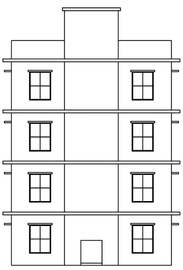

My first drawing on autocad i would like to share my experience and show how i made this drawing in 2D AND 3D
what is plan about ?
it is a simple three floor residential building plan, with section and elevation.
- G+3- it means ground floor and three other upper floors on it.
- 1BHK - one bedroom, Hall and Kitchen.
- double line plan - in this plan there is given thickness and dimensions of hall,kitchen,bedroom as well as of toilet.
- small details i have mentioned in this its about size of windows, doors ,chajja,stairs ,kitchen sinks, toilets . main door, bedroom door, toilet door and windows all sizes are different.
- this is a 2D drawing as u can see upper drawing its about ground floor,and other 3 upper floor are same.
- commands i have used to make this drawing are line, mirror, move, etc.
this image is know as section.
section means it shows u side and internal angles of drawing , and how many steels colums ,beams are needed to be given to make a proper contruction. .
- footing - is base of building as u can down parts ,it should be strong so that it can easily pickup heaviness of building. and dont let it fall.
- things which are- used for footing u can see there are cement, khadi, reti, murun, all there are used in column and beams also.
- stairs - have rise and fall it have measurement of riseis 600cm and fall is 200cm, passage is 1300cm.
- windows- are placed on a same height of for all floors there is also mentioned chajja outer part in that.
This pic is know as Elevation
Elevation is all about outer look of our contructed building, it ll shows you hows the view of project look like front outside.
- this is final part of drawing in this u can clearly see how the project looks like at end.
- this is not 2D drawing it is a 3D drawing which makes evrything look real and as per same we are gonna built on site.
- view of building can change whole look of building as well as it attract people to come forward.
this is all about my first residential building drawing THANK YOU!
written by - Saurav Darji